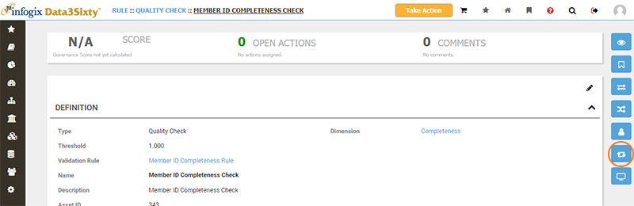
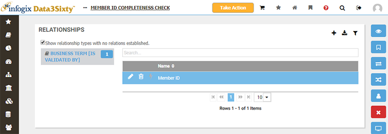
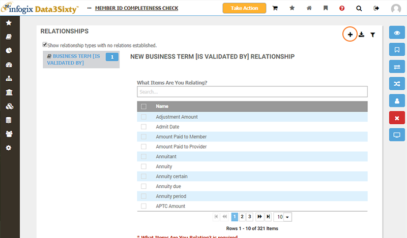
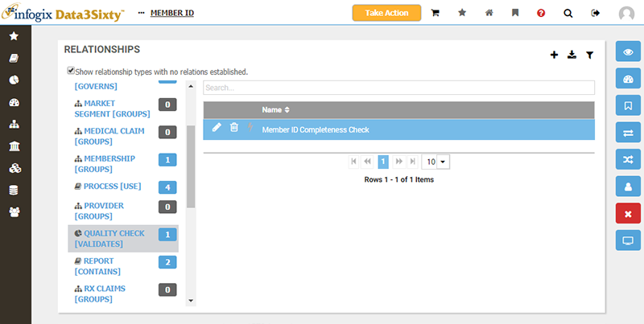

|
|
Relating quality rules to assets
Quality rules can be related to glossary artifacts and models, to associate quality metrics with business terms, applications, processes, models and so forth.
Before we look at relating rules in more detail, please ensure that you have checked out the following related topics:
You relate rules to assets using relationships such as Validates-IsValidated By or Governs-Is Governed By.
Consider the quality rule shown below, choosing the Relations view:

The Relationships for the quality rule are shown:

Note: Firstly, a Relationship Type must exist between the rule type and the artifact type (e.g. Quality Check-Business Term). Please refer to the topic Establishing relationships for more information. If this relationship type does not already exist, you will need to have access to the Administration > MetaModel > Relationships screen to create it, and may need to ask your system administrator for assistance.
With the relevant relationship type selected, you can then click the Add button as shown above to choose which artifacts to validate:

Alternatively, you can create the inverse of the relationship from the screen for an asset to validate. Simply choose the relation type 'Quality Check (Validates)' and choose the rule you wish to relate to:
